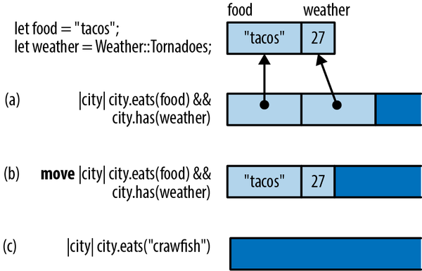
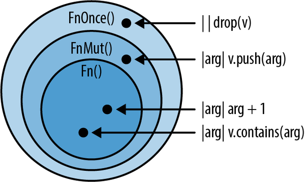
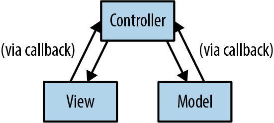
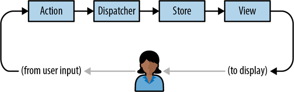

拯救环境！今天就采取行动吧！
科马克·弗拉纳ган
对整数向量进行排序非常简单：
integers.sort();
因此，一个令人遗憾的事实是，当我们需要对一些数据进行排序时，这些数据几乎从来都不是整数向量。我们通常会遇到各种记录，而内置的 sort 方法通常并不适用。
structCity{name:String,population:i64,country:String,...}fnsort_cities(cities:&mutVec<City>){cities.sort();// error: how do you want them sorted?}
Rust 抱怨说 City 没有实现 std::cmp::Ord 的功能。我们需要指定排序顺序，就像这样：
/// Helper function for sorting cities by latitude.fncity_latitude(city:&City)->i64{city.latitude}fnsort_cities(cities:&mutVec<City>){cities.sort_by_key(city_latitude);// ok}
辅助函数 city_latitude 接收一个 City 记录，并提取出用于排序数据的键。而 sort_by_key 方法则接受这个键作为参数。
这种方式也挺好用的，不过将辅助函数写成闭包形式，即匿名函数表达式，会更简洁明了：
fnsort_cities(cities:&mutVec<City>){cities.sort_by_key(|city|city.latitude);}
这里的闭包是一个函数，它接受一个参数 city ，然后返回 city.latitude 。Rust 能够根据闭包的使用方式来推断其参数类型和返回类型。
其他支持使用闭包的标准库功能的例子包括：
Iterator 中包含了诸如 map 和 filter 这样的方法，用于处理序列数据。我们将在第 15 章中详细介绍这些方法。
使用像 thread::spawn 这样的 API 来启动新的系统线程。并发的本质就是将任务分配到不同的线程上处理，而闭包正好可以代表这些处理单元。我们将在第十九章中详细讨论这些特性。
有些方法需要基于特定条件来计算默认值，比如 HashMap 条目中的 or_insert_with 方法。该方法会在 HashMap 中获取或创建一条记录，当默认值的计算成本较高时就会使用这种方法。默认值作为闭包传递，只有当需要创建新记录时才会被调用。
当然，如今匿名函数已经无处不在了，甚至像 Java、C#、Python 和 C++这样的语言中也有匿名函数。我们假设您之前已经见过匿名函数，接下来我们将重点讨论 Rust 中的闭包与常规方法之间的区别。在本章中，您将学习如何结合闭包使用标准库中的方法，如何让闭包在其作用域内“捕获”变量，如何编写自己的函数和方法，这些函数和方法可以接受闭包作为参数，以及如何将闭包存储起来以备后续使用，比如作为回调。我们还会解释 Rust 中的闭包是如何实现的，以及为什么它们的执行速度会比您预期的要快。
一个闭包可以访问属于外层函数的数据。例如：
/// Sorts cities by population according to a demographic database.fnsort_by_population(cities:&mutVec<City>,db:Demographics){cities.sort_by_key(|city|db.get_population(city));}
在大多数具有闭包的语言中，垃圾收集起着至关重要的作用。例如，考虑这段 JavaScript 代码：
// Starts an animation that rearranges the rows in a table of cities.functionstartSortingAnimation(cities,db){// Helper function that we'll use to sort the table.// Note that this function refers to db.functionkeyfn(city){returndb.get_population(city);}if(pendingSort)pendingSort.cancel();// Now kick off an animation, passing keyfn to it.// The sorting algorithm will call keyfn later.pendingSort=newSortingAnimation(cities,keyfn);}
在新的 SortingAnimation 对象中保存了 keyfn 的闭包。这个闭包应该在 startSortingAnimation 返回后被调用。通常情况下，当函数返回时，所有的变量和参数都会脱离作用域并被丢弃。但是在这里，JavaScript 引擎必须以某种方式保留 db ，因为闭包需要它。大多数 JavaScript 引擎都是通过将 db 分配到堆内存中，然后让垃圾回收器在之后回收它来实现这一点。
Rust 并不具备垃圾收集机制。那么，这种情况该如何处理呢？为了解答这个问题，我们来看看两个例子。
首先，让我们再次引用本节的开头示例：
/// Sorts cities by population according to a demographic database.fnsort_by_population(cities:&mutVec<City>,db:Demographics){cities.sort_by_key(|city|db.get_population(city));}
在这种情况下，当 Rust 创建闭包时，它会自动借用对 db 的引用。这是合理的：因为闭包指的是 db ，所以它必然拥有对 db 的引用。
其余部分很简单。这个闭包遵循了我们在第 5 章中提到的关于借用和生命周期的规则。具体来说，由于闭包中包含了对 db 的引用，因此 Rust 会确保 db 的引用不会超过 db 的生存期。由于这个闭包只在排序过程中被使用，所以这个例子是可行的。
简而言之，Rust 通过采用生命周期管理来保障安全性，而非依赖垃圾回收机制。Rust 的方法更为高效：即使是在快速进行垃圾分配的情况下，Rust 的方式仍然比在栈上存储变量要快得多。就像 Rust 在这种情况下所做的那样。
第二个例子比较复杂：
usestd::thread;fnstart_sorting_thread(mutcities:Vec<City>,db:Demographics,)->thread::JoinHandle<Vec<City>>{letkey_fn=|city:&City|->Option<i64>{db.get_population(city)};thread::spawn(||{cities.sort_by_key(key_fn);cities})}
新的线程会与调用者并行运行。当闭包返回时，新的线程也会终止。（闭包返回的值会被作为 JoinHandle 值发送回调用线程。我们将在第十九章中详细讨论这一点。）
同样， key_fn 这个闭包包含了对 db 的引用。但这一次，Rust 无法确保该引用会被安全地使用。因此，Rust 会拒绝执行这个程序。
error: closure may outlive the current function, but it borrows `db`,which is owned by the current function|33 | let key_fn = |city: &City| -> Option<i64> { db.get_population(city) };| ^^^^^^^^^^^^^^^^^^^^^^^^^^^^ -- `db` is borrowed here| || may outlive borrowed value `db`
解决这两个问题的方法都是一样的：告诉 Rust 将 cities 和 db 移动到那些需要它们作为参数的闭包中，而不是借用对它们的引用。
fnstart_sorting_thread(mutcities:Vec<City>,db:Demographics,)->thread::JoinHandle<Vec<City>>{letkey_fn=move|city:&City|->Option<i64>{db.get_population(city)};thread::spawn(move||{cities.sort_by_key(key_fn);cities})}
我们唯一改变的就是在这两个闭包之前添加了 move 关键字。 move 关键字告诉 Rust，即使这个闭包看起来只是使用了对变量的引用，但实际上它并没有只是借用这些变量，而是真正地“窃取”了它们。
因此，Rust 提供了两种让闭包从外部作用域获取数据的方式：移动值和借用值。Rust 会判断一个闭包是否需要获取某些被捕获的值，但仅考虑闭包自身的内部情况，而不考虑其上下文。 move 关键字允许我们覆盖 Rust 的默认行为。否则，闭包遵循与我们在第 4 章和第 5 章中讨论的相同规则。以下是一些具体的例子：
就像语言中的其他地方一样，如果一个闭包需要传递一个可复制类型的值，比如 i32 ，那么它就会复制该值。因此，如果 Demographics 恰好是一个可复制类型，那么即使我们创建了使用 Demographics 的 move 闭包，我们仍然可以继续使用 db 。
那些不可复制的类型的值，比如 Vec<City> ，实际上确实被移动了：前面的代码将 cities 通过 move 的闭包传递到了新线程中。在创建闭包之后，Rust 不允许我们直接通过名称访问 cities 。
实际上，在这段代码的后续部分，根本不需要使用 cities 。不过，如果我们真的需要使用它，那么解决方法很简单：我们可以告诉 Rust 复制 cities 的值，然后将复制后的值存储到另一个变量中。这样，闭包就只会复制其中一个副本——具体是哪一个，取决于它所指的变量。
通过接受 Rust 的严格规则，我们获得了一些重要的好处：线程安全性。正是因为向量是沿着线程进行移动的，而不是在多个线程之间共享，所以我们能够确保旧线程不会在新线程修改该向量时释放它。
在本章中，我们已经看到函数和闭包被用作值。显然，这意味着它们也有类型。例如：
fncity_latitude(city:&City)->i64{city.latitude}
这个函数接受一个参数（一个 &City ），并返回一个 i64 。它的类型属于 fn(&City) -> i64 。
你可以用函数来完成与其他值相同的一切操作。可以将它们存储在变量中。还可以使用常见的 Rust 语法来计算函数的值。
// Choose between two functions of type `fn (&City) -> f64`letmy_key_fn=ifuser.prefs.latitude_sort{city_latitude}else{city_longitude};cities.sort_by_key(my_key_fn);
结构体可以拥有函数类型的字段。像 Vec 这样的通用类型能够存储大量的函数，这些函数被称为函数指针；而 fn 类型则类似闭包的概念。这类类型，比如 fn(u32) -> u32 ，其运作方式非常类似于闭包。
fnadd_ten(x:u32)->u32{x+10}letfn_ptr:fn(u32)->u32=add_ten;leteleven=fn_ptr(1);//11
实际上，那些无法从环境中获取任何信息的闭包实际上是没有用的，因为它们不需要存储任何关于被捕获变量的额外信息。如果你在绑定或函数签名中指定了正确的 fn 类型，那么编译器会允许你以这种方式使用它们。
letclosure_ptr:fn(u32)->u32=|x|x+1;lettwo=closure_ptr(1);// 2
与捕获闭包不同，这些函数指针非常微小，仅包含函数机器代码的内存地址而已，就像 C++中的函数指针一样。
一个函数也可以将另一个函数作为参数传递。例如：
/// Given a list of cities and a test function,/// this counts how many cities pass the test.fncount_selected_cities(cities:&Vec<City>,test_fn:fn(&City)->bool,)->usize{letmutcount=0;forcityincities{iftest_fn(city){count+=1;}}count}/// An example of a test function. Note that the type of/// this function is `fn(&City) -> bool`, the same as/// the `test_fn` argument to `count_selected_cities`.fnis_irish(city:&City)->bool{city.country=="Ireland"}// How many cities are in Ireland?letn=count_selected_cities(&my_cities,is_irish);
经过所有这些之后，或许会让人惊讶的是，闭包并不具有与函数相同的类型：
letcountry=preferences.country();letn=count_selected_cities(&my_cities,|city|city.country==country,// error: mismatched types);
第二个论点导致了类型错误。为了支持闭包机制，我们必须修改这个函数的类型签名。它应该看起来像这样：
fncount_selected_cities<F>(cities:&Vec<City>,test_fn:F)->usizewhereF:Fn(&City)->bool,{letmutcount=0;forcityincities{iftest_fn(city){count+=1;}}count}
我们只改变了 count_selected_cities 的类型签名，而主体部分并未发生变化。新版本是一个泛型函数，它接受一个任意类型的 test_fn 作为参数 F ，只要 F 实现了特殊特征 Fn(&City) -> bool 。所有接受单个 &City 作为参数并返回布尔值的函数以及大多数闭包都自动实现了这一特征。
fn(&City)->bool// fn type (function pointer: fn or non-capturing closure)Fn(&City)->bool// Fn trait (also covers capturing closure types)
这种特殊的语法结构是语言本身就包含在内的。 -> 和返回类型都是可选的；如果省略了这些类型，那么返回类型就应该是 () 。
新版本的 count_selected_cities 可以接受函数或闭包作为输入参数：
count_selected_cities(&my_cities,is_irish,// ok);count_selected_cities(&my_cities,|city|city.country=="Ireland",// also ok);
为什么我们的第一次尝试没有成功呢？嗯，一个闭包是可以被调用的，但它并不像函数指针那样简单；只有当闭包没有捕获任何变量时，才能被用作函数指针，比如写成 fn 的形式。而闭包 |city| city.country == "Ireland" 拥有自己的类型，不是 fn 类型。
由于每个闭包都有自己对应的类型，因此那些用于处理闭包的代码通常需要采用泛型的方式编写，比如 count_selected_cities 。每次都要明确说明这些泛型类型有点麻烦，但如果你想了解这种设计的优势，那就继续阅读吧。
Rust 的闭包设计旨在实现极快的执行速度：其性能甚至优于函数指针，足以在那些对性能要求极高的代码中放心使用。如果你熟悉 C++中的 lambda 表达式，那么你会发现 Rust 的闭包同样具有极高的执行效率、简洁的语法，而且更加安全。
在大多数语言中，闭包是分配在堆内存中的，它们会被动态分配并垃圾回收。因此，创建、调用和回收每个闭包都会额外消耗少量的 CPU 时间。更糟糕的是，闭包会妨碍内联技术的实现——内联是编译器用来消除函数调用开销以及实现其他优化手段的关键技术。总的来说，在这些语言中，闭包的速度实在太慢了，因此有时值得手动从紧密的内层循环中移除它们。
Rust 中的闭包没有这些性能方面的缺陷。它们不会进行垃圾回收。与其他 Rust 中的对象一样，闭包也不会在堆上分配内存，除非你将其放在 Box 、 Vec 等容器中。而且，由于每个闭包都有独特的类型，因此当 Rust 编译器知道你正在调用的闭包的类型时，它就可以优化该闭包的代码。这使得在循环中使用闭包变得可行，而正如第 15 章所展示的，许多 Rust 程序确实会积极使用闭包。
图 14-1 展示了 Rust 中的闭包在内存中的存储方式。在图的顶部，我们展示了几个局部变量，这些变量将被闭包所引用：一个字符串 food ，以及一个简单的枚举类型 weather ，其数值恰好为 27。

这个闭包使用了两个变量。显然，我们是在寻找同时拥有“塔可餐厅”和“龙卷风”的城市。在内存中，这个闭包看起来像是一个小型的结构体，其中包含了对所使用的变量的引用。
请注意，它并不包含指向其代码的指针！实际上，这是不必要的：只要 Rust 能够识别闭包的类型，那么当调用该闭包时，它就能知道应该执行哪段代码。
闭包（b）的情况完全一样，只不过这里使用的是 move 闭包，因此它包含的是值而不是引用。
这种闭包（c）并不使用其环境中的任何变量。该结构体是空的，因此这种闭包根本不占用任何内存资源。
在“回调”中，我们将展示如何将闭包分配至堆内存中，并动态调用它们，使用的是 dyn 方法。虽然这种方式稍微慢一些，但与其他 dyn 方法的调用速度一样快。
在迄今为止的章节中，我们讨论了 Rust 如何确保闭包在从周围代码中借用或移动变量时，能够遵守语言的安全规则。不过，还有一些不太明显的影响需要说明。在本节中，我们将进一步解释当闭包丢弃或修改了捕获的值时会发生什么。
我们已经看到了一些通过借用值来实现闭包的情况，还有一些则是通过窃取值来实现闭包的情况。这些做法发展到极致只是时间问题而已。
当然，所谓“杀死”其实并不准确。在 Rust 语言中，我们只是将值“丢弃”而已。最简单的方法就是调用 drop() :
letmy_string="hello".to_string();letf=||drop(my_string);
当调用 f 时，会执行 my_string 的操作。注意，这里其实不需要写 move 。Rust 语言足够智能，能够理解我们的意图是让 my_string 被 f 所窃取。
那么，如果我们叫它两次，会发生什么呢？
f();f();
让我们仔细思考一下。当我们第一次调用 f 时，它会释放存储字符串的内存空间，使得该内存被归还给系统。第二次调用 f 时，同样的情况也会发生。这就是所谓的“双重释放”，这是 C++编程中常见的错误，可能会导致不可预知的行为。
在 Rust 语言中，连续两次使用 String 符号同样是一个糟糕的想法。幸运的是，Rust 并不容易被欺骗：
f();// okf();// error: use of moved value
Rust 知道这种闭包不能被调用两次。
那种只能被调用一次的闭包似乎有些特别。但在本书中，我们一直都在讨论所有权和生命周期的问题。资源被使用掉（即被“移动”）这一概念是 Rust 的核心概念之一。对于闭包来说，其运作方式与其他所有东西都是一样的。
让我们再尝试一次，让 Rust 两次都输出 String 符号吧。这次，我们将使用这个通用函数：
fncall_twice<F>(closure:F)whereF:Fn(),{closure();closure();}
这个通用函数可以接受任何实现了` Fn() `特性的闭包作为参数。也就是说，这些闭包不需要接收任何参数，并且返回` () `值。（与函数类似，如果返回类型不重要，可以省略掉它；` Fn() `是` Fn() -> () `的简写形式。）
那么，如果我们把这个不安全的闭包传递给这个通用函数，会发生什么呢？
letmy_string="hello".to_string();letf=||drop(my_string);call_twice(f);
同样，当调用该函数时， my_string 将会被释放。如果多次调用该函数，就会引发双重释放错误。不过，Rust 语言不会轻易被欺骗：
error: expected a closure that implements the `Fn` trait, butthis closure only implements `FnOnce`|8 | let f = || drop(my_string);| ^^ ---------| | || | closure is `FnOnce` because it moves the variable| | `my_string` out of its environment| this closure implements `FnOnce`, not `Fn`9 | call_twice(f);| - the requirement to implement `Fn` derives from here
当你第一次调用一个 FnOnce 闭包时，这个闭包本身就被用完了。就好像 Fn 和 FnOnce 这两个特性被这样定义了一样：
// Pseudocode for `Fn` and `FnOnce` traits with no arguments.
trait Fn() -> R {
fn call(&self) -> R;
}
trait FnOnce() -> R {
fn call_once(self) -> R;
}
就像算术表达式如 a + b 是方法调用的简写形式一样，在 Rust 中， closure() 也是前面例子中提到的两个方法之一的简写形式。对于 Fn 这样的闭包， closure() 会展开为 closure.call() 。这个方法会以引用方式接收 self 作为参数，因此闭包不会被移动。但如果你知道这个闭包只能被调用一次，那么 closure() 就会展开为 closure.call_once() 。而那个方法则会以值传递方式接收 self 作为参数，这样闭包就会被释放掉。
当然，我们故意通过使用 drop() 来制造麻烦。实际上，你大多会意外地陷入这种状况。这种情况并不经常发生，但偶尔你会编写一些关闭代码的程序，而这些代码会无意中占用某个资源。
letdict=produce_glossary();letdebug_dump_dict=||{for(key,value)indict{// oops!println!("{key:?} - {value:?}");}};
当您多次调用 debug_dump_dict() 时，将会出现如下错误信息：
error: use of moved value: `debug_dump_dict`|19 | debug_dump_dict();| ----------------- `debug_dump_dict` moved due to this call20 | debug_dump_dict();| ^^^^^^^^^^^^^^^ value used here after move|note: closure cannot be invoked more than once because it moves the variable`dict` out of its environment|13 | for (key, value) in dict {| ^^^^
为了调试这个问题，我们必须找出为什么闭包里的值是 FnOnce 。这里到底使用了哪个值呢？编译器提示我们，实际上使用的是 dict ，而在这个案例中， dict 是我们唯一会引用的变量。啊，问题就在这里：我们直接对 dict 进行了迭代操作，而应该使用 &dict 来进行迭代，这样才能通过引用来访问这些值。
letdebug_dump_dict=||{for(key,value)in&dict{// does not use up dictprintln!("{key:?} - {value:?}");}};
这样就能解决错误了；该函数现在是一个 Fn 对象，可以被调用多次。
还有一种类型的闭包，这种闭包包含可变的数据或 mut 类型的引用。
Rust 认为，非 mut 类型的值在跨线程之间共享是安全的。但是，包含 mut 数据的非 mut 类型的闭包则不可安全共享：从多个线程调用这样的闭包可能会导致各种竞态条件，因为多个线程同时尝试读写相同的数据。
因此，Rust 还提供了一种新的闭包类型，即 FnMut 。这种闭包类型被称为“写入闭包”。而 FnMut 类型的闭包则通过 mut 进行引用调用，就好像它们是以这种方式定义的那样：
// Pseudocode for `Fn`, `FnMut`, and `FnOnce` traits.
trait Fn() -> R {
fn call(&self) -> R;
}
trait FnMut() -> R {
fn call_mut(&mut self) -> R;
}
trait FnOnce() -> R {
fn call_once(self) -> R;
}
任何需要访问 mut 值的闭包，但却不会释放任何值的闭包，都属于 FnMut 类型。例如：
letmuti=0;letincr=||{i+=1;// incr borrows a mut reference to iprintln!("Ding! i is now: {i}");};call_twice(incr);
我们在编写 call_twice 时，需要用到 Fn 。而 incr 属于 FnMut 类别，并非 Fn 类别，因此这段代码无法编译。不过，有一个简单的解决方法。为了理解这个解决方法，让我们先退一步，总结一下关于 Rust 闭包的三种分类。
Fn 是一组闭包和函数的集合，可以无限制地多次调用。这个最高级别的类别也包含了所有 fn 函数。
FnMut 是一类闭包，如果该闭包本身被声明为 mut ，那么就可以多次调用它。
FnOnce 是一组可以一次性调用的闭包，只要调用者拥有该闭包即可调用它。
每个 Fn 都满足 FnMut 的要求，每个 FnMut 也满足 FnOnce 的要求。如图 14-2 所示，它们并非三个独立的类别。
实际上， Fn() 是 FnMut() 的子系统，而 FnMut() 又是 FnOnce() 的子系统。因此， Fn 成为了最独特且最强大的类别。 FnMut 和 FnOnce 则是更为广泛的类别，它们包含了那些具有使用限制的封闭性结构。

现在我们已经整理出了我们所知道的信息，很明显，为了接受尽可能广泛的关闭操作，我们的 call_twice 函数实际上应该能够处理所有 FnMut 类型的关闭操作，就像这样：
fncall_twice<F>(mutclosure:F)whereF:FnMut(),{closure();closure();}
第一行的绑定值原来是 F: Fn() ，现在变成了 F: FnMut() 。通过这个修改，我们仍然支持所有 Fn 的闭包操作，而且我们还可以在对数据进行修改的闭包中使用 call_twice 。
letmuti=0;call_twice(||i+=1);// ok!assert_eq!(i,2);
正如 Rust 能够自动判断哪些闭包只能被调用一次，它也能判断出哪些闭包可以实现 Copy 和 Clone 的功能，而哪些闭包则无法实现这些功能。
正如我们之前所解释的，闭包被表示为结构体，其中包含了变量的值（对于 move 闭包而言）或者对变量值的引用（对于非 move 闭包而言）。在闭包中， Copy 和 Clone 的规则与常规结构体中 Copy 和 Clone 的规则相同。对于那些不修改变量的非 move 闭包来说，它们只持有共享的引用，也就是 Clone 和 Copy 这样的引用。因此，这种闭包同时具有 Clone 和 Copy 的特性。
lety=10;letadd_y=|x|x+y;letcopy_of_add_y=add_y;// This closure is `Copy`, so...assert_eq!(add_y(copy_of_add_y(22)),42);// ... we can call both.
另一方面，一个不会使值发生变化的 move 闭包，在其内部表示中仍然包含可变的引用。而可变的引用既不属于 Clone 也不属于 Copy ，因此，使用这些引用的闭包也就不存在了。
letmutx=0;letmutadd_to_x=|n|{x+=n;x};letcopy_of_add_to_x=add_to_x;// this moves, rather than copiesassert_eq!(add_to_x(copy_of_add_to_x(1)),2);// error: use of moved value
对于 move 类型的闭包，规则更为简单。如果闭包捕获的所有内容都是 Copy ，那么它就是 Copy 。如果它捕获的所有内容都是 Clone ，那么它就是 Clone 。例如：
letmutgreeting=String::from("Hello, ");letgreet=move|name|{greeting.push_str(name);println!("{greeting}");};greet.clone()("Alfred");greet.clone()("Bruce");
这种 .clone()(...) 语法有点奇怪，但它的意思就是先克隆那个闭包，然后再调用那个克隆后的对象。这个程序的输出结果如下：
Hello, AlfredHello, Bruce
当在 greet 中使用 greeting 时，它会被内部复制到代表 greet 的结构中，因为它本质上是一个 move 闭包。因此，当我们克隆 greet 时，其中的所有内容也会被复制。此时会有两个副本的 greeting ，在调用 greet 的克隆版本时，每个副本都会分别被修改。虽然单独来看这并不太有用，但当你需要将同一个闭包传递给多个函数时，这种方法就非常有帮助了。
许多库都使用回调作为其 API 的一部分：即由用户提供的函数，供库在之后调用。实际上，在本书中已经见过一些这样的 API 了。在第二章中，我们使用 actix-web 框架编写了一个简单的 Web 服务器。那个程序中的一个重要组件就是路由器，它的结构如下所示：
App::new().route("/",web::get().to(get_index)).route("/gcd",web::post().to(post_gcd))
路由器的作用是将来自互联网的传入请求导向那些能够处理特定类型请求的 Rust 代码。在这个示例中， get_index 和 post_gcd 分别是我们在程序中用 fn 关键字声明的函数名称。不过，我们也可以采用另一种方式传递这些函数，比如通过这种方式：
App::new().route("/",web::get().to(||{HttpResponse::Ok().content_type("text/html").body("<title>GCD Calculator</title>...")}),).route("/gcd",web::post().to(|form:web::Form<GcdParameters>|{HttpResponse::Ok().content_type("text/html").body(format!("The GCD of {} and {} is {}.",form.n,form.m,gcd(form.n,form.m),))}),)
这是因为 actix-web 被设计为可以接受任何线程安全的 Fn 作为其参数。
我们如何在自己的程序中实现这一点呢？让我们尝试从零开始编写一个非常简单的路由器程序，而不使用 actix-web 提供的任何代码。我们可以先定义几种类型来表示 HTTP 请求和响应。
structRequest{method:String,url:String,headers:HashMap<String,String>,body:Vec<u8>,}structResponse{code:u32,headers:HashMap<String,String>,body:Vec<u8>,}
现在，路由器的任务仅仅是存储一个表格，将 URL 映射至相应的回调函数。这样就能根据需求调用正确的回调函数了。（为了简单起见，我们只允许用户创建与单个精确 URL 匹配的路由。）
structBasicRouter<C>whereC:Fn(&Request)->Response,{routes:HashMap<String,C>,}impl<C>BasicRouter<C>whereC:Fn(&Request)->Response,{/// Creates an empty router.fnnew()->BasicRouter<C>{BasicRouter{routes:HashMap::new(),}}/// Adds a route to the router.fnadd_route(&mutself,url:&str,callback:C){self.routes.insert(url.to_string(),callback);}}
不幸的是，我们犯了一个错误。你注意到了吗？
只要为该路由器添加一条路由，那么它就能正常工作了。
letmutrouter=BasicRouter::new();router.add_route("/",|_|get_form_response());
这段代码已经可以编译并运行了。不过，如果我们再添加一条路由的话……
router.add_route("/gcd",|req|get_gcd_response(req));
然后就会出现错误：
error: mismatched types|71 | router.add_route("/gcd", |req| get_gcd_response(req));| --------- ^^^^^^^^^^^^^^^^^^^^^^^^^^^| | expected closure, found a different closure| arguments to this method are incorrect|= note: expected closure `{closure@bad_router.rs:70:27: 70:30}`found closure `{closure@bad_router.rs:71:30: 71:35}`= note: no two closures, even if identical, have the same type= help: consider boxing your closure and/or using it as a trait object
我们的错误在于对 BasicRouter 类型的定义方式有误。
structBasicRouter<C>whereC:Fn(&Request)->Response,{routes:HashMap<String,C>,}
我们无意中宣称每个 BasicRouter 都有一个单一的回调类型 C ，而 HashMap 中的所有回调都是这种类型。在“使用哪种类型”这一部分中，我们提到了一个 Salad 类型，它也存在同样的问题：
structSalad<V:Vegetable>{veggies:Vec<V>,}
这里的解决方案与沙拉的做法类似：因为我们想要支持多种类型，所以需要使用容器和 dyn 。
typeBoxedCallback=Box<dynFn(&Request)->Response>;structBasicRouter{routes:HashMap<String,BoxedCallback>,}
每个盒子都可以使用不同类型的闭合方式，因此单个 HashMap 就可以包含各种回调函数。需要注意的是，类型参数 C 已经不再使用了。
这需要对方法进行一些调整：
implBasicRouter{// Create an empty router.fnnew()->BasicRouter{BasicRouter{routes:HashMap::new(),}}// Add a route to the router.fnadd_route<C>(&mutself,url:&str,callback:C)whereC:Fn(&Request)->Response+'static,{self.routes.insert(url.to_string(),Box::new(callback));}}
请注意，在 add_route 的类型签名中，对 C 有两个限制：一个是特定的 Fn 特性，另一个是 'static 生命周期。Rust 要求我们必须添加这个 'static 限制。如果没有这个限制，调用 Box::new(callback) 将会引发错误，因为如果闭包中包含了对即将超出作用域的变量的引用，那么存储这样的闭包就是不安全的。
最后，我们的简单路由器已经可以处理传入的请求了：
implBasicRouter{fnhandle_request(&self,request:&Request)->Response{matchself.routes.get(&request.url){None=>not_found_response(),Some(callback)=>callback(request),}}}
虽然需要牺牲一些灵活性，但我们也可以编写一种更节省空间的路由器实现方式。在这种方案中，不再存储 trait 对象，而是使用函数指针来保存路由信息。这样的路由表看起来会像这样：
structFnPointerRouter{routes:HashMap<String,fn(&Request)->Response>,}
在这里， HashMap 每 String 只存储一个 usize 对象。重要的是，没有使用到 Box 这个变量。为了不支持捕获闭包，我们取消了所有动态分配操作，只保留 HashMap 本身的动态分配功能。当然，相关的方法也需要进行相应的调整。
implFnPointerRouter{// Create an empty router.fnnew()->FnPointerRouter{FnPointerRouter{routes:HashMap::new(),}}// Add a route to the router.fnadd_route(&mutself,url:&str,callback:fn(&Request)->Response){self.routes.insert(url.to_string(),callback);}}
如图 14-1 所示，闭包具有独特的类型，因为每一个闭包都负责处理不同的变量。因此，它们的尺寸也是不同的。不过，如果某个闭包什么都不包含，那么就没有什么可以存储的了。在需要使用回调函数的函数中，可以通过使用 fn 指针来限制调用者只能使用这些不负责捕获变量的闭包。这样可以在代码实现上提高性能和灵活性，但代价是 API 使用者的灵活性会受到影响。
正如我们所看到的，Rust 中的闭包与其他大多数语言中的闭包有所不同。最大的区别在于，在具有垃圾回收机制的语言中，可以在闭包中使用局部变量，而无需考虑生命周期或所有权的问题。而在没有垃圾回收机制的情况下，情况就不同了。一些在 Java、C#和 JavaScript 中常见的设计模式，在 Rust 中需要做出相应的修改才能使用。
例如，以模型-视图-控制器设计模式为例（简称 MVC），如图 14-3 所示。在用户界面中的每个元素，MVC 框架都会创建三个对象：一个表示该元素状态的模型，一个负责其外观的视图，以及一个处理用户交互的控制器。多年来，人们实现了许多不同的 MVC 变体，但总体思路都是让这三个对象分别承担用户界面的不同职责。
问题就在于：通常每个对象都直接或通过回调机制与其他对象保持联系。如图 14-3 所示，当其中一个对象发生任何变化时，它会通知其他对象，这样所有数据都能及时得到更新。不过，关于哪个对象“拥有”其他对象的问题则从未被提及过。

Rust 提出的激进方案是，存在一些优秀的替代设计。有时候，可以通过让每个闭包接收所需的引用作为参数来解决所有权和生命周期问题。有时候，可以给系统中的每个对象分配一个编号，然后传递这些编号而不是引用。或者，可以采用 MVC 的多种变体之一，即不让所有对象之间相互依赖引用。另外，也可以模仿非 MVC 系统的单向数据流模式来设计工具集，比如 Elm 架构，如图 14-4 所示。这种架构由 Elm 语言首创，被广泛应用于 Rust 库以及像 React 和 Redux 这样的流行 Web 开发框架中。

在下一章中，我们将探讨一个让闭包发挥作用的领域。我们将编写一些代码，充分利用 Rust 中闭包的简洁性、高效性以及易读性，这些代码既有趣味十足，又易于理解，而且非常实用。接下来介绍的是 Rust 的迭代器。